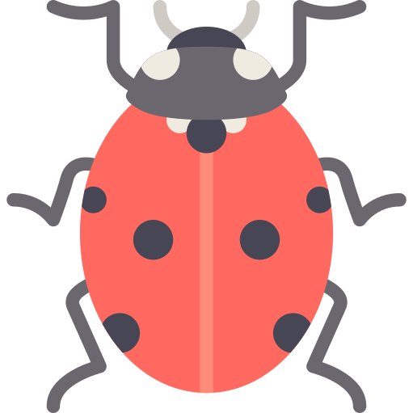
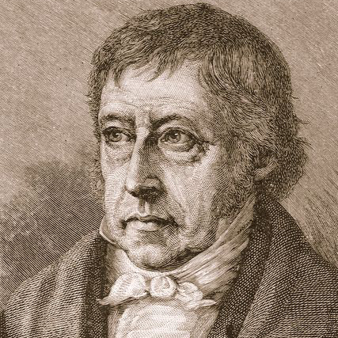

-
Герои России
Специальная военная операция на Украине
Информации о героях спецоперации достаточно много и хотелось бы создать свой контент на эту тему, с забавной статистикой (1).
Но для этого ведь нужно иметь фото, даты, награды, звания, истории, теги и пр. информацию в удобном формате, например JSON (2). Его нужно сделать удобно доступным для всех.
Но для этого нужно ведь написать сборщик героев, который будет собирать, распознавать и сохранять эту информацию по сайтам и телеграм-каналам (3). Его код тоже пускай будет открыт.
-

Titamóta
Тайм-трекер
Простой тайм-трекер задач и денег, чтоб не отвлекал внимания, чтобы бесплатно была мощь гибкой структуризации, чтоб отчеты — разве найдешь? Приходится самому делать.
Главное чтобы сразу начать трекать, не разбираясь и не думая. Чтоб дизайн не отвлекал на себя внимание. Думать и уделять внимание надо работе, а не тайм-трекеру.
Простой и скрыто мощный. Для моих собратьев — фрилансеров.
-
Типовая фигура
Подбор типовой фигуры по росту
и трем обхватамКогда шьешь на заказ, удобно снимать лишь ключевые мерки — рост, обхват груди, талии и бедер — а остальные полсотни находить по ближайшей типовой фигуре.
Это простой фильтр типовой фигуры с картинками. Умеет найти ближайшую типовую фигуру если заданы размеры клиента.
Умеет сохранить все это плюс имя клиента в ссылке, чтоб использовать как закладку — актуально для большой базы клиентов.
-

Книги
Читалка и набор книг
Хорошие книжки очень длинные и тормозят в браузере. Нужна читалка с бесшовной бесконечная подгрузка. И автоматически генерируемое оглавление... Так и скроллбар придется заново делать.
И лучше на веб-компонентах, потому что Pure JavaScript ™
-

Skoblimora
Алхимический помощник для Skyrim, Oblivion и Morrowind
Вот идешь по предгорьям
Северного КавказаSkyrim'а, собираешь ингредиенты. Каких нужно собрать побольше, а какие нужны лишь для прокачки алхимии?Или ситуация целеполагания — нужно найти не просто полезные рецепты, а убойные комбинации, например, урона от яда вместе с повышением уязвимости к яду.
Это интересная математическая задача поиска полезных пересечений связанных по смыслу массивов данных.
-
Minota
Сервис заметок
Долгострой мечты.
Каждый кодер должен построить дом, посадить дерево и написать сервис заметок. Много мыслей, кода и прототипов, но очень с трудом нащупывается путь к цели.
Однажды будет.
Остальное на github.com/antivitla